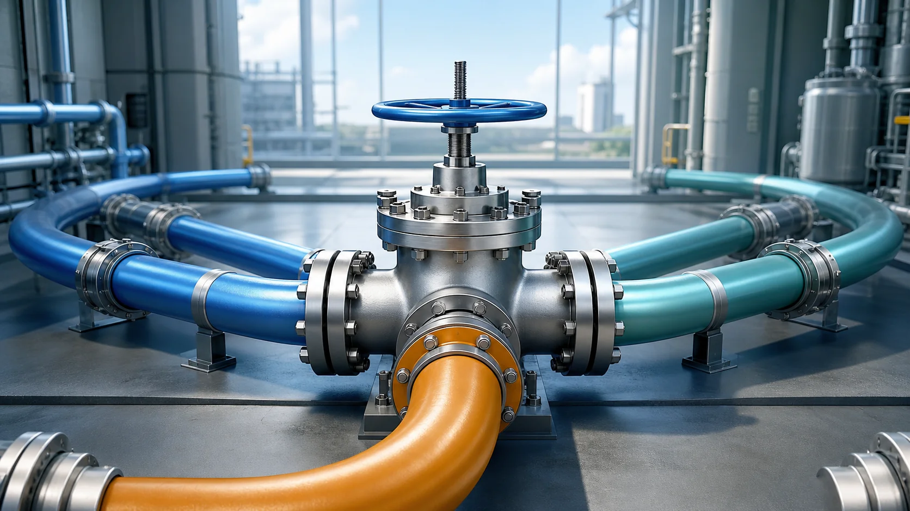
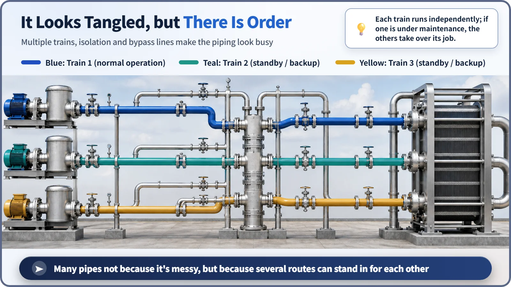
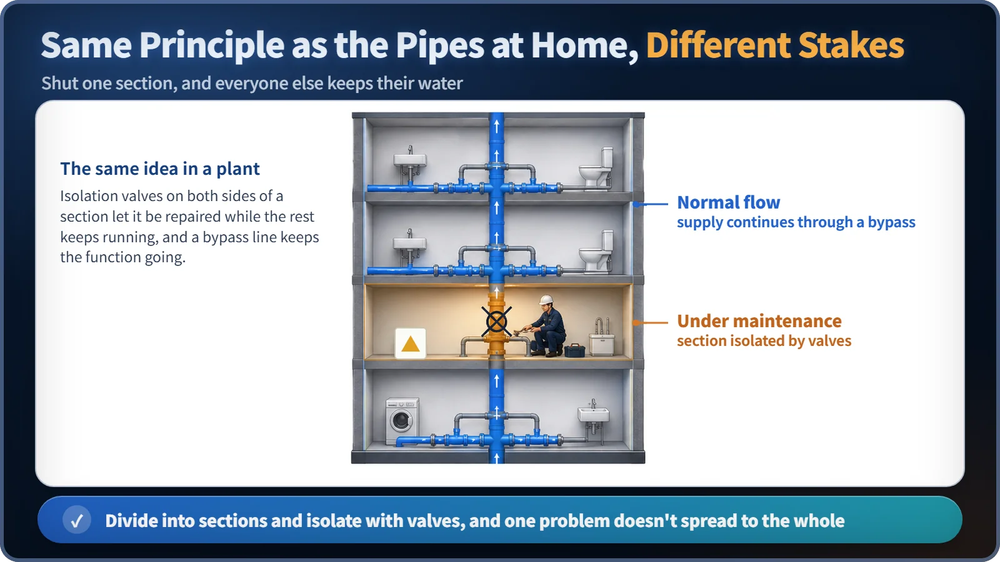

Reactor Components · 074
There's a Reason the Subway Map Looks So Busy — Why Nuclear Plants Have So Many Pipes and Valves
Redundant trains, isolation valves and bypass lines keep safety functions running through failures and maintenance.

A nuclear plant's tangle of pipes and valves is not sloppy design. Safety functions are built as several independent trains so that one failure can't stop them, and valves divide the piping into sections that can be isolated or bypassed for maintenance while the rest keeps running.
A subway map looks dizzying at first, but every line has a reason
Seoul, Tokyo, New York: the first time you look at a big city's subway map, it makes you a little dizzy. Colored lines overlap and bend, and transfer stations are covered in circles. Look a little closer, though, and a question pops up: "Why not connect the whole city with a single line?"
The answer is clear: you can't. With only one line, the moment there's an accident or a maintenance shutdown anywhere on it, the entire city's subway stops. You need several lines so that when one stops, people can go around it or transfer to another. And where lines meet, at transfer stations, there is always a point that decides "this way or that way."
A nuclear plant's pipes and valves follow exactly this structure. Pipes are the lines that fluids such as coolant, steam and water travel along, and valves are the transfer stations and switches on those lines that open, close and direct the flow.

Innocent question 1: "Why not merge it all into one pipe?"
The answer comes from one of the core principles of nuclear safety design, the single failure criterion. The name sounds stiff, but the idea is simple: "A function important to safety must keep working even if one component fails or is briefly taken out for maintenance."
How do you meet that principle? You can't build just one set of pipes, valves and pumps for a given job. You need several independent sets side by side (usually called "trains"). Typically there are two trains, and for important systems, three or even four. And they aren't just placed side by side; they are also physically separated so that a single event, such as a fire or flooding, can't hit several trains at once.
In subway terms: with one line, the city's traffic is paralyzed the moment it stops; with several lines, you can carry on with the rest when one is down. If you've ever wondered, "Why are there two or three sets of pipes for the same function?", the answer is almost always this: so that when one stops, the others can pick up its role.
Put simply in numbers:
Number of trains needed ≥ number of failures to be tolerated + 1
In other words, if the requirement is "keep the function even with one failure," you need at least two trains (one that fails plus one that keeps working). That arithmetic is the first reason a plant seems to have so many pipes.
Innocent question 2: "Do you really need so many valves? Why not just leave everything open?"
Take this one apart, too, and the answer appears. Ideally a power plant runs 24 hours a day for years without stopping, but sooner or later some section of pipe must be inspected or have a part replaced. What if there were no valves? To work on one spot, you'd have to shut down the entire system connected to that pipe.
That's why isolation valves (shutoff valves) are installed on both sides of any section that will need maintenance. Close them, and that section alone is cut off from the rest of the system, while the other pipes and equipment keep running normally. In subway terms, one section goes in for track repair while the rest of the line runs as usual, and passengers simply detour around that section or transfer. Often there is also a separate bypass line with its own valves, besides the main route, so that maintenance can be done without shutting the plant down at all. It's the same idea as a subway's detour service.
Breaking down what valves do a bit further:
- Shutoff valves: fully open or fully block the flow; literally a "door."
- Control valves: fine-tune the flow rate or pressure so that just the right amount goes through.
- Check valves (non-return valves): let fluid flow in one direction only and stop it from flowing backward.
- Safety valves (relief valves): open automatically to release pressure when it exceeds a set limit, then close again when it returns to normal.
Seen this way, each valve is a decision point, like a transfer station or traffic signal on a line, that settles "when, how much and in which direction" the flow goes. The more finely the piping is divided into sections, and the more you want to manage each section independently, the more valves you naturally need.

So what does "lots of pipes and valves" really mean?
Now the answer to the original innocent question, "Couldn't you just merge it all into one?", comes naturally. Having many pipes and valves isn't the result of sloppy design or wasted budget. It's the result of deliberately building in several layers so that safety functions and power generation keep going even during failures and maintenance. As complicated as it looks, that's how much safety margin is built in.
For reference, the industry has described a single nuclear unit as using tens of thousands of valves (one project for two large units, for example, was reported to use some 28,000 valves), and the total length of piping has been put at more than 10 km per unit. The exact numbers vary from plant to plant and come from industry sources rather than precise statistics, but the impression that "far more pipes and valves are tangled together than you'd expect" is accurate.
There's also a device that's easy to confuse with valves. A valve, which opens, closes or adjusts the flow, is a "door." A pump, which creates the flow, is more like a "push." If you recall the pumps we looked at earlier, it's easy to see that valves decide "where and how much" of the fluid a pump pushes out actually goes.
Today's story in one line
The reason a nuclear plant seems to have so many pipes and valves is much like the reason a subway map looks so busy. There are several lines so that one stopping doesn't paralyze the whole city, and transfer points and switches are everywhere so that exactly the right sections can be separated and controlled. A plant's pipes are the lines that fluids travel along, and its valves are the transfer stations and traffic signals on those lines. Behind the complexity there is always a clear reason: to keep running even through failures and maintenance. If you remember just that, it's enough for today.